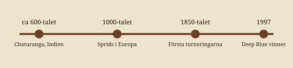

Schackets historia
Schack kommer ursprungligen från Indien, där ett spel kallat chaturanga spelades redan på 500-600-talet. Det spreds via Persien till Europa runt år 1000, och fick ungefär dagens regler på 1800-talet.
En av de mest kända partierna är Byrne mot en ung Bobby Fischer, 1956, kallad "The Game of the Century".
1997 slog datorn Deep Blue världsmästaren Garry Kasparov, startskottet för dagens datorschack.

Mer att läsa: Schack på Wikipedia.